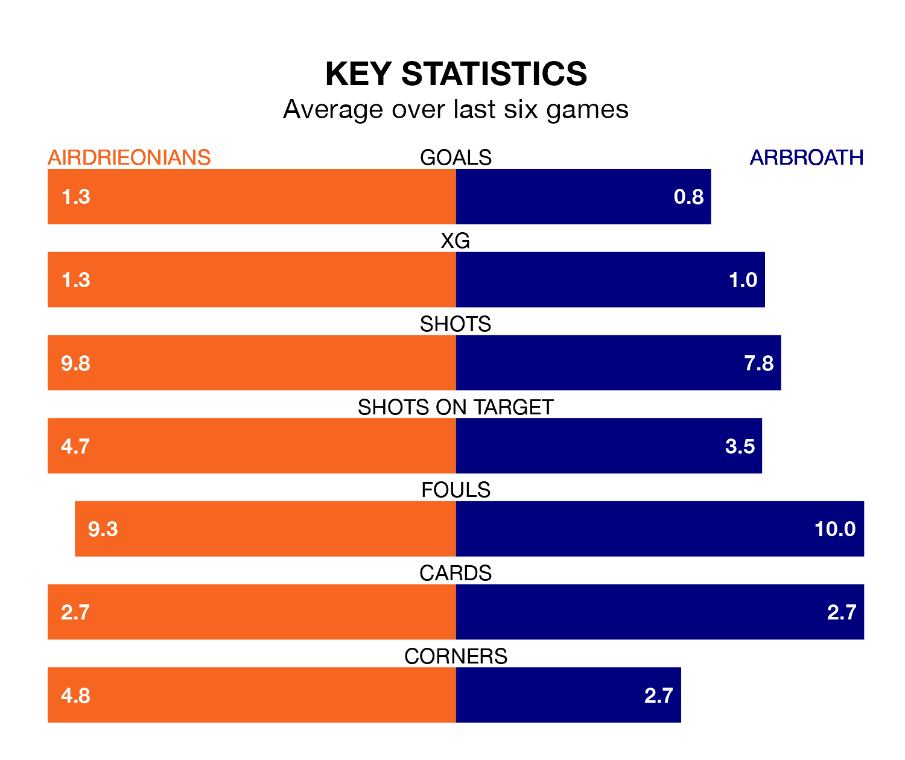

Airdrieonians host Arbroath on Saturday at the Excelsior Stadium in the Championship.
In their last league match, on March 9, Airdrieonians drew with Inverness CT 0-0 away.
Arbroath lost, 4-0 away at Dundee United.
Arbroath are bottom of the table after 27 games, of which they have won six and drawn five, earning 23 points.
Airdrieonians are five places ahead of the visitors in fifth, with 10 wins and six draws putting them on 36 points.
In Joshua Rae, the home team can rely on one of the league's safest pair of hands. He has kept nine clean sheets in his 26 appearances this season, and only one other 'keeper – Dundee United's Jack Walton – has been able to prevent the opposition scoring on more occasions in the Championship.
In Arbroath's net, Derek Gaston has three clean sheets in 21 games. He has conceded a goal every 45 minutes, twice as often as the 89 minutes between goals for Rae.
In the last 10 years, Airdrieonians and Arbroath have played each other on 12 occasions. Airdrieonians won three of them, Arbroath seven, and they drew twice.
On average, Airdrieonians scored 1.0 goal and Arbroath 2.0 in those matches.
Their last meeting was on November 11, when Airdrieonians won 2-0 at home.
Airdrieonians are in mixed form in the Championship, with two wins and two draws from their last six games.
With a win and two draws over that period, Arbroath's form is worse – they have taken five points from 18, compared to Airdrieonians's eight.
With 28 goals in 27 games so far this season, the hosts are the league's joint-second-lowest scorers with 1.0 goals per game. But they are conceding fewer than average too, letting in 30 goals at a rate of 1.1 per game.
The away side are also below average scorers, with 1.0 goal per game, compared to a league average of 1.4. They have conceded 2.2 goals per game.
Saturday's match will be refereed by Peter Stuart, who has taken charge of five Championship games so far this season, issuing no red cards and booking 23 players. He has not awarded any penalties.
The last Airdrieonians game Stuart refereed was a 1-0 away loss to Ayr United on December 16. He is yet to oversee a match featuring Arbroath this season.
Updated: 15:10 (UTC), 15/03/24